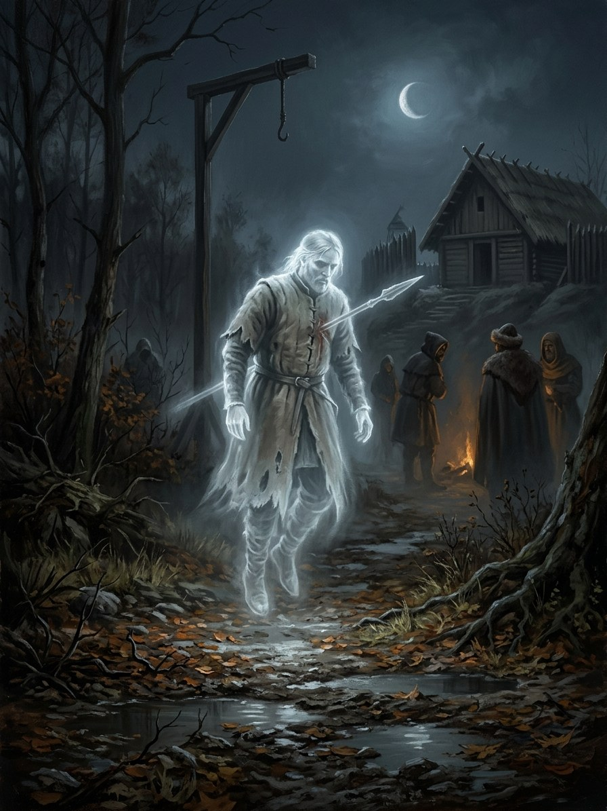

Vaiduokliai (apparitions)¶
Folk source [Historical record]¶
Ghosts and apparitions: the visible return of the dead, especially those who died violently or left something undone, haunting a place or a person.
Vaiduokliai (apparitions)

Vaiduokliai (apparitions) · creature¶
Tipas |
būtybė |
Status |
Sagos išmonė |
Pastaba |
Bestiary §17. Danger I. |
In the saga (where the folk are half-wrong)¶
A vaiduoklis is not a soul. It is the land’s memory replaying (the Law of Memory, magic rules §5.3): a residue of something so strongly felt that the place keeps showing it. The folk confuse vaiduokliai with vėlės, which is half right: a vėlė can use a vaiduoklis as a mask, but most apparitions have no one inside, which is why most ghosts cannot be fed or bargained with. Amber shows them most clearly, because amber stores memory.
Signs & habitat¶
The same figure at the same hour; places of great working or great grief (the Krėva cell, the Palanga stone).
Before / after the Unbinding¶
Unchanged in nature, but more of them: the Unbinding is a century of grief, and grief leaves pictures.
Banes, wards, bargains, and their cost¶
None needed; most do no harm (mistaking one for a vėlė wastes offerings and raises false hope). To lay one, change the place (burn the room, fell the tree) and the memory goes with it.
Danger level¶
I nuisance, before and after.
Story hooks¶
Book I ch. 23: Kęstutis after an honoured cremation is not his vėlė but a vaiduoklis carried by Birutė’s amber, which is why the scene smells of sea salt. Book IV: Vytautas, near death, sees his younger self in the Trakai halls.
Ryšiai
Anchored by: Motinos gintaras (Birutė’s pebble) (1382–1384) — Kęstutis’s apparition at the pyre is carried by Birutė’s amber.
Origin [Historical record] ghosts, the visible return of the dead · [The saga's invention] the land's memory replaying
Tier Residue · the Law of Memory, not a spirit
Danger I nuisance, before and after
Habitat Places of great working or great grief: the Krėva cell, the Palanga stone
Wants Nothing. Most have no one inside
Takes Nothing, beyond wasted offerings from those who mistake one for a vėlė
Signs The same figure at the same hour. Amber shows them most clearly, because amber stores memory
Banes None needed. To lay one, change the place
Half-wrong truth. The folk confuse them with vėlės. A vėlė can use one as a mask, but most apparitions are pictures with no one inside, so most ghosts cannot be fed or bargained with.
More after 1387. Unchanged in nature, but the Unbinding is a century of grief, and grief leaves pictures.
Replaying. Shows the same strong feeling, at the same place and hour.
Laying one. Burn the room or fell the tree. The memory goes with it.
Mistaking one for a vėlė. Wasted offerings, and false hope.
Sąsajos¶
graph LR
pebble["Motinos gintaras (Birutė's pebble)"]
vaiduokliai["Vaiduokliai (apparitions)"]
pebble -->|Anchors| vaiduokliai
style vaiduokliai stroke-width:3px